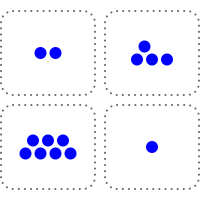

格拉迪亚斯和泽坐在一间密闭屋子的桌旁，桌面本身就是一块屏幕。屏幕上分作四格，各堆着一些圆圈。

“好，那我该怎么做？”
“你先走，所以挑一格，从那一格里至少拿走一个圆圈。可以多拿，但至少要拿一个，而且一次只能从一格拿。”
“谁拿走最后一个圆圈，谁就赢。”
格拉迪亚斯觉得自己对这游戏谈不上什么战略眼光，于是决定边下边学。
他用手指点了左上格里的一个圆圈。

泽立刻应了一手，点了右下格最上面的那个圆圈。

格拉迪亚斯决定换个路数。他点了左下格里的三个圆圈。

泽应了一手，把右下格里的圆圈全点走，只留下一个。

格拉迪亚斯把左下格剩下的圆圈全点了。泽只是点了右上格里的一个圆圈，作为回应。
格拉迪亚斯把左上格剩下的圆圈全点了。泽则点了右上格剩下三个圆圈中的两个。

“好吧，我输了。”格拉迪亚斯承认。
他唯一能走的下一步，就是从两个格子里的一格拿走最后一个圆圈。这样棋盘上就只剩一个圆圈，泽拿走就赢了。
“你下得真厉害。”
“这是我们小时候常玩的游戏，尤其是在民本棋这类更现代的东西出现之前。”
“那接下来是不是该传授你的独门秘诀了？”
“你倒是懂我。秘诀确实有，而且是个很简单的算法。它需要心算，可你一旦学会，并且算得不出错，那么只要先手后手由你挑，你就永远能赢。”
“那就说吧。”
“把每个格子的圆圈数拿来异或。做法是：把每个数写成二进制。对每一位，数一数这一位上有几个1。如果1的个数是奇数，新数的这一位就写1；否则写0。我们把这个数叫作棋盘的异或和。”
“等等，慢点，举个例子。”
“就拿我们开局那个棋盘。四个格子的圆圈数是3、4、10、13。”
“好。”
“换成二进制是多少？”
“11、100、1010，还有……等等，1101？”
“对！不过我们补几个0，把它们凑成一样长，再写下来。”
他打开手持终端，把这四个数写成网格的样子。
0100
1010
1101
“现在竖着一列一列地数。”
“每一位都有两个1，是偶数。那异或和就是……每一位都是0，所以是0？”
“正是。还记得你第一步走了什么吗？”
“我把第一个数从3减到了2。”
“没错。”
0100
1010
1101
“现在异或和是多少？”
“最低位上现在只有一个1，变成奇数了，所以是1？”
“正是。还记得我做了什么？”
“抱歉，我忘了。”
“我从最后一个数里拿走一个，把它从13减到12。”
0100
1010
1100
“哦，我明白了！异或和又回到0了！”
“正是。所以每次轮到你走，异或和原本是0，而你无论怎么走，都只能让它不再是0。但只要它不是0，我就总能找到某一步，把它调回0。”
“等等，真的吗？”
“取异或和里最高的那个1所在的位。在这一位上为1的圆圈数，个数必然是奇数，也就是说至少有一个。挑出这样一个格子，把它的圆圈数和异或和再做一次异或，用得出的结果替换原来的数。改完之后一定比原来小，因为有一位从1翻成了0，而其余变化的位都比它低。”
“我……大概懂了一点？”
“所以每次你走，只能让异或和不再是0；轮到我走，我就把它调回0。而最后一步——清空棋盘的那一步——也会把异或和变成0。也就是说，最后取胜的那一步，永远轮得到我来走。”
“如果开局时棋盘的异或和不是0，那我执先手就能赢。但如果开局异或和是0，那我执后手就稳赢。”
“有意思！”
格拉迪亚斯往后一靠，想了一会儿。
“我以前从没见过后手占优的游戏。”
“也未必！只有开局异或和是0时，它才偏向后手。而后手占优的游戏，比你想的要常见。”
“通常局面里总有一处位置、一块地盘是有价值的，先手因为能先到，就占了便宜。”
“你能想到，是什么底层原因让一个游戏偏向后手吗？”
“什么意思？”
“后手有什么根本性的优势？”
格拉迪亚斯又停下来想了想。
“轮到他走的时候，他知道得更多。”
“没错。”
“在这里，我先走一步，你就有机会根据我这一步作出应对，于是你永远知道该走哪一步，能把局面重新拉回平衡。”
“正是。”
这次，泽停了一下。过了一会儿，格拉迪亚斯又开口了。
“说起来，如果你执先手，大概也一样能赢。”
“为什么？”
“因为我不知道诀窍。在你眼里，这里有个数学结构，它有一个理想状态——每当我走完，异或和都是0的那个状态。一旦进入这个状态，胜局就永远锁定了。可在我眼里，那只是一团乱。”
“确实。熵这东西，永远只存在于观察它的人眼中。”
“这个游戏是一座由不同层次的规则搭起来的塔。”泽接着说道。“最底下那一层，游戏是不可逆的：每一步你都必须至少拿走一个圆圈。比它高一层，是异或和，那一层是可逆的。无论你怎么改，我总能调回来。但在比那更高的一层上，当异或和处于平衡时轮到你走，这件事本身才是不可逆的。一旦你让局面滑进那个状态，而对手又懂这个诀窍，你就再也出不来了。”
泽又沉默了。过了一会儿，他换了个坐姿，示意热身到此为止，真正的提问要开始了。
“好，下一个问题，格拉迪亚斯。争夺维里迪亚的这场斗争，是先手占优，还是后手占优？”
格拉迪亚斯眼睛睁大了，显然没想到话题会拐到这边。
“什么意思？”
“北极人先动手。他们布设或接管了间谍基础设施；对维里迪亚官员施压、行贿、威胁；还发动了一场高度协同的行动，甚至想拿下掌舵会，让它听命于自己，还让维里迪亚社会觉得抵抗也没什么意思。最后，他们先打了红郡，又打了北林。那么，是他们因为已经占住了关键位置而获胜，还是我们因为握有反制策略而获胜？”
“我明白了……”
“在战场上，眼下他们占优，而且根本不是什么先手的缘故——就是技术更好。但在机构之争里，我们有反制策略。他们玩的这套，我们也能玩，而且我们占优，因为我们要达成的目标，恰恰是我们要去影响的大多数人本来就想要的。”
“只是让他们看清自己的利益所在，从而影响他们去做真正对他们有利的事——这种事的说法叫什么？”
“听起来答案特别简单。”
“说服。”
“那我们去说服谁，让他们做什么？”
“你说呢。”
格拉迪亚斯又顿住了。终于，他开口了。
“合议庭怎么样？”
“继续说。”
“我们对合议庭搞一场同样的影响行动，就像德尔瓦特他们那伙人对掌舵会做的那样。然后说服他们去做……某件能收拾整个局面的事。”
“你学得很快，格拉迪亚斯。”
“那么，我们在这件事上为什么占优？”
“因为我们做的事对维里迪亚真的有利。德尔瓦特要让掌舵会成员做出违背维里迪亚利益的事，就得给每个人准备一套不同的说辞，量身定制，顺着他们的价值观，也戳着他们的软肋，除此之外还要或明或暗地威胁。我们不用这样。我们只要有一个明确的诉求，然后照实把这个故事讲出来就行。说谎很容易栽跟头：一个谎言本质上就是一个虚拟世界，而要让它自洽，你就得把整个世界真的模拟一遍，这几乎做不到。但真相天然自洽，这是白送的。所以我们讲真话。”
“那么，下一个问题。我们对合议庭的诉求是什么？”
“去找韦尔多谈谈。”
“那通电话你来安排。我这就去问一下登，看看我们在维里迪亚的谍报进展。”
格拉迪亚斯点了点手表。
| 消息 | 收件人 | 时间 | |
|---|---|---|---|
| [正在呼叫] | → | 78145 |
过了一会儿，韦尔多接了。
“格拉迪亚斯！近来可好啊？”
“参议员，我们有个新想法。”
“什么想法？”
“北极人当初对掌舵会试过的那一套，我们也想对合议庭来一遍。找出足够多的法官，说服他们去做一件事，让我们能真正反击北极人。”
泽看准机会插了进来。
“管这些摄像头的管理员，大多刚刚装上了我们的更新。这个更新还会回传每台摄像头的现状——结果发现，有一批早就被北极人接管了。所以现在我们手里有很多后门，也已经锁定了十几名法官，顺带还掐掉了他们的一些后门。不过这也意味着，我们接下来得更小心，不能再进一步暴露自己了。他们能玩的那套，我们一样能玩——大概还能玩得更好，因为我们的目标，本来就该是维里迪亚的法官们真心想要的。”
“所以，我们得想清楚，到底要说服他们去做什么。”
韦尔多似乎笑了，那笑更多是出于赞赏。
“我就知道你们能想出点办法来。”
“让我想想……”
沉默了片刻。然后，韦尔多缓缓开口。
“好，我有个疯狂的想法。”
“在维里迪亚，最基本的法律之一，就是军方必须保卫国家。这是第十四条根本法，白纸黑字写在文件里。在北林，他们彻底没能守住国家，而且事后几乎连认真改革的尝试都没有。”
“所以，维里迪亚军方是违法者。所以，合议庭可以撤他们的职。如果议会想拦，那也好办——法律上，议会是军方的集体首脑，于是合议庭连议会一起撤了也行。”
“合议庭……有这么大的权力？”
“原则上，合议庭能做的事很多。”
韦尔多顿了顿，然后决定岔开去谈点哲理。
“你看，格拉迪亚斯，法律不像一段跑在密码学网络里的计算机程序。法律的目的，不是要消灭判断世上是非对错时的那种主观性。恰恰相反，法律要做的是给这种主观判断搭出结构——为它划出一些渠道，使它更可预测、更聚焦，好让每桩案子不必重新审一遍‘什么对人类有益、什么有害’这类根本问题。”
“在普通案件里，它确实常常很接近程序化，而这也正是关键所在。法庭上的一桩商业纠纷，争的不是谁人品好，而是其中一方有没有做出法律定义上的欺诈行为。但在任何例外案件里，都还留着很大的弹性——事实上，今天已成判例法的任何情形，在过去的某个时刻都还是未知的、有弹性的。”
“而这份潜在的弹性，正是给合议庭留出空间、做出好判决的关键。人不是为分类而生的，是分类为人而设的。宣布整个军方违背了它神圣的职责，这很疯狂。疯狂到在我看来，维里迪亚历史上从未有人尝试过任何类似的事。但维里迪亚也正处在一个疯狂的时代。所以此刻，正需要这样一份疯狂的判决。”
“要赢这一局，光把我刚才那套论证扔到公众面前，指望法官一看就知道当然正确、立刻照办，是不够的。你得去说服他们。你得跟他们坐下来，把话说透：这不只是一个站得住脚的法律论证，而且对维里迪亚有好处；还要向他们说明，为什么把整个军方领导层换掉——必要时连议会一起换掉——是能够拯救维里迪亚、而不是把局面推得更乱的事。还要让他们相信，会有足够多的其他法官一起走这条路，而且等他们作出裁决时，公众也会跟上。而所有这些，都得先悄悄做，再一下子亮出来，让北极人来不及反应。”
“我喜欢这一点：连‘这计划值得一试’都不用说服你。”
“我在议会会议上听到的别的方案，只有两个：一是继续照旧，只是‘再努力一点’；二是干脆投降。我判断这两个的成功概率比这个还低。”
Gladias and Zei were sitting at a table in an enclosed room, with the tabletop functioning as a screen. On the screen, there were four piles of circles.
"Okay, so what do I do here?"
"It's your turn first, so you pick one pile, and take at least one circle from the pile. You can take more, but you have to take at least one, and you can only take from one pile."
"Whoever picks up the last circle wins."
Gladias did not feel like he had any strategic insight about the game, and so he decided he would learn by playing.
He tapped one circle in the top left box with his finger.
Zei immediately responded by tapping the circle at the top of the bottom right box.
Gladias decided he would try something different. He tapped three circles in the bottom left box.
Zei responded by tapping every circle in the bottom right box, except for one.
Gladias tapped on all the remaining circles in the bottom left box. Zei responded by simply tapping on one of the circles in the top right box.
Gladias tapped on all the remaining circles in the top left box. Zei tapped on two of the three remaining circles in the top right box.
"Okay fine, I lost", Gladias admitted.
The only next move he could make would be to remove the last circle from one of the two boxes. This would leave one circle on the board, which Zei could take and win.
"That was impressive."
"It's a game that we would play often as children, especially before more modern things like Minpentai came along."
"So is this the part where you tell me your secret sauce?"
"You know me well. There is indeed a secret sauce. It's a simple algorithm. It requires mental math, but once you learn it, and if you can do the math without mistakes, then as long as you get to choose if you're going first or second, you will always win."
"So tell me."
"Take the XOR of the circle counts of each box. So, write each count as a number in base 2. For each position, count up how many ones there are in that position. If there is an odd number of ones, in our new number we will put a 1 in that position. Otherwise, we put a 0. We'll call this the XOR sum of the board."
"Wait, slow down, give me an example."
"Let's take the board we started with. The counts are 3, 4, 10, 13."
"Okay."
"What is that in binary?"
"11, 100, 1010 and ... hold on, 1101?"
"Yep! Though let's add some zeroes to make them the same length and write it down."
He opened up his hand device, and wrote down the four numbers in a grid shape.
0100
1010
1101
"Now, count up along the columns."
"They all have two ones. That's even. So the XOR sum is ... zero everywhere, so it's zero?"
"Exactly. Now, remember what your first move was?"
"I decreased the first count from three to two."
"Correct."
0100
1010
1101
"What's the XOR sum now?"
"Lowest-order digit has a single one now, so it became odd, so it's 1?"
"Exactly. Now, remember what I did?"
"Sorry, I forget."
"I took one off of the last count, decreased it from thirteen to twelve."
0100
1010
1100
"Oh I see! And the XOR sum is back to zero!"
"Exactly. So whenever you move, the XOR sum started off zero, and any move you make can only make it nonzero. But if it's nonzero, then I always have some move that can set it back to zero again."
"Wait, is that true?"
"Take the highest-order digit of the XOR sum that's a 1. There have to be an odd number of circle counts whose digit at that position is a 1, meaning there has to be at least one. In that box, change its count from N to N XORed with the XOR sum. That's always a decrease, because one digit flips from 1 to 0 and all other digits that change are lower-order."
"I ... maybe get it?"
"And so whenever you move, you can only change the XOR sum from zero to nonzero. When I move, I set it back to zero. And the final move, the move that clears the board, sets the XOR sum to zero. So that means the winning move is always mine to make."
"Now, if the board started with an XOR sum that's not zero, then I would win if I go first. But if the board starts with an XOR sum of zero, then as second player I'm guaranteed to win."
"Interesting!"
Gladias sat back and thought for a few moments.
"I've never seen a game that favors the second player before."
"It doesn't necessarily! It only favors the second player if the initial board has an XOR sum of zero. But games that favor the second player are more common than you might think."
"Normally there's some position, some territory that's valuable, and the first player has an advantage because they can get to it first."
"Can you think of what kind of underlying reason might make a game second-player favoring?"
"What do you mean?"
"What fundamental advantage does the second player have?"
Gladias paused to think again.
"They know more when they get to make their move."
"Correct."
"Here, I would make my move, and you would be in a position to make your counter-move based on my move, and so you always know the exact move that will bring things back into balance."
"Exactly."
This time, Zei paused. After a few moments, Gladias spoke again.
"You know, if you were the first player, you would have probably won too."
"And why is that?"
"Because I didn't know the trick. To you, there was a mathematical structure that has one desirable state - the state where the XOR sum is zero every time I move. And once you reach it, you're locked in forever. To me, it was just chaos."
"Indeed. Entropy is always in the eye of the beholder."
"The game is a tower of different kinds of rules", Zei continued. "At the bottom, the game is irreversible: you always have to take at least one circle away in each move. At a level higher than that, there's the XOR sum, and that is reversible. Whatever change you make, I can always set it back. But at a level even higher than that, the fact that it's your turn when the XOR sum is in balance is the irreversible thing. Once you let the game slip into that state, if the other player knows the trick, there is no way to get back out."
Zei went silent again. After a few moments, he changed his posture, signaling that the warmup was over and the real line of questioning was about to begin.
"Now, here's your next question, Gladias. Is the fight for Veridia a first-player-favoring or a second-player-favoring game?"
Gladias's eyes opened wide, visibly surprised at the new direction the conversation was going.
"What do you mean?"
"The Arctics moved first. They set up or took over spying infrastructure. They pressured, bribed or threatened Veridian officials. They made a highly coordinated campaign to try to take over even the Order of Steering, and get it to do their bidding and nudge Veridian society to not bother resisting. And finally they attacked Redshire and then Northglade. Do they win because they already captured the important positions, or do we win because we have a counter-strategy?"
"I see..."
"On the field of battle, right now they have the advantage, and not even for any first-player reasons - their technology is just better. But in the battle for the institutions, we have a counter-strategy. We can play the same game they do, but we have the advantage because we're seeking goals that most of the people we would be manipulating actually want."
"What's the word for manipulating someone to do something that's actually in their interest, by just showing them how it's in their interest?"
"This sounds like it has a really simple answer."
"Convincing."
"So whom do we convince, and to do what?"
"You tell me."
Gladias again paused. Finally, he spoke.
"What about the Courts?"
"Go on."
"We run the same kind of influence campaign on the Courts that Delwart and whoever else did on the Order. And we convince them to do ... something that fixes this whole situation."
"You learn quickly, Gladias."
"Now, why do we have the advantage here?"
"Because what we're doing is actually good for Veridia. For Delwart to convince the Order members to go against Veridia's interests, he had to make different arguments for each person, tailor-made to their values and their weaknesses, and on top of that threaten them either implicitly or directly. We don't have to do that. We just have to have a clear thing that we're asking for, and tell the story directly, as it is. When you lie, it's easy to get tripped up: a lie is essentially a simulated virtual universe, and it's very hard to make a virtual universe that's consistent without actually simulating the whole thing. But the truth gives you self-consistency for free. So we tell the truth."
"So now, the next question. What is our ask for the Courts?"
"Let's talk to Verdow."
"You set up that call. I'll quickly ping Den and get the latest on how our spying in Veridia is going."
Gladias tapped on his watch.
| Message | To | Time | |
|---|---|---|---|
| [requesting call] | → | 78145 |
After a few moments, Verdow answered.
"How are you, Gladias!"
"Senator, we have a new idea."
"And what is that?"
"We want to do the same thing to the Courts that the Arctics tried to do to the Order. Seek out enough of their judges, convince them to do something that will let us fight back against the Arctics properly."
Zei saw the opportunity to join the conversation.
"Most of the admins running the cameras just installed our update. It also called home to report each camera's existing state; it turns out a bunch of them had been taken over by the Arctics already. So now we have lots of backdoors, we've already identified over a dozen judges, and we've killed some of their backdoors as a bonus - though that does mean we have to be more careful now about not breaking our cover any further. So we can play the game just as well as the Arctics can - probably even better, because our goals are goals that the Veridian judges should actually want."
"And so we need to figure out what the thing we want to convince them to do actually is."
Verdow seemed to laugh, more with admiration than anything else.
"I knew you guys could pull something together."
"Let me think about this..."
For a few moments, silence. Then, Verdow slowly began to speak.
"Okay, I have one crazy idea."
"In Veridia, one of the most basic laws is that the military is required to defend the country. It's the fourteenth Ground Law, it's written right there in the documents. In Northglade, they completely failed to defend the country, and they are barely even trying to make any serious reforms in response."
"Therefore, the Veridian military are lawbreakers. Therefore, the Courts can fire them. And if the parliament tries to stop that, then, well, the parliament is legally the collective head of the military, so the Courts can fire them too."
"The Courts ... have that much power?"
"In principle the courts can do many things."
Verdow paused, and then decided to enter a philosophical tangent.
"You see, Gladias, law is not like a computer program sitting inside a cryptographic network. The goal of law is not to try to eliminate the subjective nature of interpreting what's right and wrong in the world. Gather, the goal is to structure it - put it into channels that make it more predictable, and more focused, so that each case doesn't re-litigate the fundamental questions of what is good or bad for humanity."
"In a normal case, it often does approach being quite programmatic, and that is the point. A business dispute in court not about who is a good person, it's about whether or not one party committed the legally-defined act of fraud. But in any exceptional case, a lot of flexibility remains - and indeed, any situation that is settled case law today was unknown and flexible at some point in the past."
"And this latent flexibility is key to giving courts space to make good decisions. Man was not made for categories. Categories were made for man. Declaring the entire military in violation of its sacred duty is crazy. It's something so crazy that I don't think anything remotely like it has been attempted in Veridian history. But Veridia is also in a crazy time. And so at this moment, a crazy judgement like that is exactly what Veridia needs."
"Winning here is not just a matter of blasting out into the public the argument that I just made, where the judges will see that of course it's correct and immediately act on it. You have to convince them. You have to sit with them. Explain to them why this is not just a valid legal argument, but also good for Veridia. Explain to them why replacing the entire military leadership, and if needed the parliament, is something that will rescue Veridia, rather than throwing it into further chaos. And convince them that enough other judges will go along too, and that when they make their decision, the public will go along too. And do all that first quietly than suddenly, so that the Arctics can't react."
"I like how we don't even need to convince you that the plan is worth trying."
"The only other plans I've heard in my parliament meetings are to keep doing what we've been doing all along but 'try harder', and outright surrender. I judge those two as having an even lower success probability than this."